pacman::p_load(sf, tidyverse, lubridate, sfdep, spdep,
Kendall, modifiedmk, tmap, knitr, kableExtra)02: Geospatial Analytics for Peace
1. Introduction and Study Context
Myanmar has experienced ongoing armed conflict since 1948, following its independence from the United Kingdom. Dominated primarily by ethnic-based struggles for self-determination between various Ethnic Armed Organisations (EAOs) and the national armed forces (the Tatmadaw), the situation entered a critical new phase following the February 2021 military coup. The overthrow of the democratically elected government led by the National League for Democracy triggered widespread civil unrest, which rapidly escalated into nationwide armed resistance.
Today, Myanmar represents one of the world’s most complex and prolonged civil conflicts, characterised by fragmented territorial control, massive civilian displacement and persistent political violence. Conflict is neither spatially random nor static, and spatio-temporal analysis of conflict data can reveal how violence clusters and evolves (Kam & Zhi, 2018). Peace-building and humanitarian actors need to know where violence clusters, which townships behave unusually relative to their neighbours, and whether clusters are emerging, intensifying or fading.
2. Research Objectives and Questions
2.1 Research Objectives
This exercise uses the Armed Conflict Location & Event Data (ACLED) Project’s records for Myanmar from 1 January 2021 to 30 September 2025 and the MIMU township boundaries to:
- Aggregate armed-conflict events to townships and build a township × quarter space-time cube.
- Use Local Measures of Spatial Association (LMSA), specifically Local Indicators of Spatial Association (LISA), to identify spatial clusters (High-High, Low-Low) and outliers (High-Low, Low-High) of armed conflict.
- Use Emerging Hot Spot Analysis (EHSA), which combines time-series Gi* with the Mann-Kendall trend test, to reveal where, how consistently and in what pattern hot and cold spots of armed conflict are evolving. A robustness test is also conducted using the modified Mann-Kendall trend test.
- Use bivariate Local Moran’s I to identify where civilians are most exposed to military air strikes, whether that exposure is tied to front lines, and where the relatively safer areas are.
Please refer to the Executive Summary for the key analysis and recommendations.
2.2 Research Questions
- RQ1: Where are the statistically significant clusters of armed conflict, and do they differ by type?
- RQ2: Which townships are spatial outliers, e.g., a violent township surrounded by calm ones?
- RQ3: Where, how consistently and in what pattern have hot and cold spots of armed conflict evolved between Q1 2021 and Q3 2025?
- RQ4: Where are civilians most exposed to military air strikes, is that exposure tied to front lines, and where are the relatively safer areas?
2.3 Variables
The analysis uses event counts of armed conflict as the primary variable, measuring how often armed conflict occurs in each township and quarter. Fatalities are introduced only in the value-added analysis, where the objective is civilian protection. There, the number of deaths per event identifies which forms of attack are most lethal to civilians, and this determines the variable analysed in the rest of that section. Fatalities are not used in the LMSA and EHSA because they are highly concentrated in a small number of mass-casualty events, which would let single incidents dominate a township’s results.
| Section | Analysis | Variables | Objective |
|---|---|---|---|
| Data wrangling and geovisualisation | Point map, choropleths, space-time cube | conflict_events, battles, remote, vac |
Map the geographic distribution of armed conflict |
| LMSA | Local Indicators of Spatial Association | conflict_events, battles, remote, vac |
Spatial clusters (High-High, Low-Low) and outliers (High-Low, Low-High) |
| EHSA | Emerging hot spot analysis with Mann-Kendall trend | conflict_events, battles, remote, vac |
Where, how consistently and in what pattern armed conflict is evolving |
| Value-added | Lethality check; bivariate LISA | fatalities, mil_air, clash |
Civilian protection and peace-building |
3. Getting Started
3.1 Installing R Packages
| Package | Purpose in this exercise |
|---|---|
| sf | Read the shapefile, convert ACLED points, reprojection, point-in-polygon join |
| tidyverse / lubridate | Cleaning, deriving quarters, aggregation, zero-filling |
| sfdep / spdep | Neighbours, weights, local Moran’s I, bivariate LISA, Gi*, space-time cube, EHSA |
| Kendall | Mann-Kendall monotonic trend test |
| modifiedmk | Modified Mann-Kendall test for serially correlated series |
| tmap | Choropleths and significance maps |
| knitr, kableExtra | Tables |
3.2 Dataset
| Dataset | Source | Format |
|---|---|---|
| ACLED Myanmar, 1 Jan 2021 – 30 Sep 2025 | ACLED | CSV, 87,109 events × 31 fields |
| Myanmar township boundaries (adm3), MIMU v9.4 | MIMU GeoNode | ESRI shapefile, 330 townships |
3.3 Importing Dataset
The geospatial data for Myanmar township boundaries is imported as mmr_ts_raw. names() is used to check the columns in the dataset.
mmr_ts_raw <- st_read(dsn = "data/geospatial", layer = "mmr_polbnda_adm3_250k_mimu_1")Reading layer `mmr_polbnda_adm3_250k_mimu_1' from data source
`C:\kayc134\ISSS626_kayc\Take-Home_Ex\Take-Home_Ex02\data\geospatial'
using driver `ESRI Shapefile'
Simple feature collection with 330 features and 8 fields
Geometry type: MULTIPOLYGON
Dimension: XY
Bounding box: xmin: 92.1721 ymin: 9.605884 xmax: 101.17 ymax: 28.54554
Geodetic CRS: WGS 84names(mmr_ts_raw)[1] "ST" "ST_PCODE" "DT" "DT_PCODE" "TS" "TS_PCODE" "TS_MMR"
[8] "PCode_V" "geometry"The aspatial data of ACLED events is imported as acled_raw, and its columns and values are viewed using glimpse().
acled_raw <- read_csv("data/aspatial/ACLED_Data_Myanmar_Jan2021-Sep2025.csv",
show_col_types = FALSE)
glimpse(acled_raw)Rows: 87,109
Columns: 31
$ event_id_cnty <chr> "MMR10920", "MMR10906", "MMR10932", "MMR10933", "MM…
$ event_date <date> 2021-01-01, 2021-01-01, 2021-01-01, 2021-01-01, 20…
$ year <dbl> 2021, 2021, 2021, 2021, 2021, 2021, 2021, 2021, 202…
$ time_precision <dbl> 1, 1, 1, 1, 1, 1, 1, 1, 1, 1, 1, 1, 1, 1, 1, 1, 1, …
$ disorder_type <chr> "Political violence", "Political violence", "Politi…
$ event_type <chr> "Violence against civilians", "Battles", "Battles",…
$ sub_event_type <chr> "Attack", "Armed clash", "Armed clash", "Armed clas…
$ actor1 <chr> "Unidentified Armed Group (Myanmar)", "PSLF/TNLA: P…
$ assoc_actor_1 <chr> NA, NA, NA, NA, NA, NA, NA, NA, NA, NA, NA, NA, NA,…
$ inter1 <chr> "Political militia", "Rebel group", "Rebel group", …
$ actor2 <chr> "Civilians (Myanmar)", "RCSS/SSA-S: Restoration Cou…
$ assoc_actor_2 <chr> NA, NA, NA, NA, NA, NA, NA, NA, NA, NA, NA, NA, "Go…
$ inter2 <chr> "Civilians", "Rebel group", "Rebel group", "Rebel g…
$ interaction <chr> "Political militia-Civilians", "Rebel group-Rebel g…
$ civilian_targeting <chr> "Civilian targeting", NA, NA, NA, NA, NA, NA, NA, "…
$ iso <dbl> 104, 104, 104, 104, 104, 104, 104, 104, 104, 104, 1…
$ region <chr> "Southeast Asia", "Southeast Asia", "Southeast Asia…
$ country <chr> "Myanmar", "Myanmar", "Myanmar", "Myanmar", "Myanma…
$ admin1 <chr> "Shan-North", "Shan-North", "Shan-North", "Shan-Nor…
$ admin2 <chr> "Muse", "Kyaukme", "Kyaukme", "Kyaukme", "Sittwe", …
$ admin3 <chr> "Muse", "Kyaukme", "Hsipaw", "Namtu", "Sittwe", "Na…
$ location <chr> "Muse", "Kyaukme", "Hsipaw", "Namtu", "Sittwe", "Pa…
$ latitude <dbl> 23.9933, 22.5392, 22.6166, 23.0766, 20.1462, 22.960…
$ longitude <dbl> 97.9103, 97.0343, 97.3003, 97.4033, 92.8984, 97.511…
$ geo_precision <dbl> 2, 2, 2, 2, 2, 1, 2, 1, 1, 2, 2, 2, 2, 1, 2, 2, 2, …
$ source <chr> "Mizzima; Shan Herald Agency for News; Shwe Phee My…
$ source_scale <chr> "Subnational-National", "Subnational", "Other", "Ot…
$ notes <chr> "On 1 January 2021, in Hko Wein village or Muse tow…
$ fatalities <dbl> 1, 0, 0, 0, 0, 0, 0, 0, 0, 0, 3, 0, 1, 0, 0, 0, 0, …
$ tags <chr> "Terrorist activity", "Insurgency", "Insurgency", "…
$ timestamp <dbl> 1754410549, 1753971383, 1753971383, 1753971383, 178…4. Data Wrangling
4.1 CRS Transformation
Myanmar spans roughly 92°E–101°E and straddles UTM zones 46N and 47N, so no single UTM zone covers it without distortion. WGS 84 / UTM zone 47N (EPSG:32647) is used, as it contains most townships.
The analysis relies on the fields ST (state/region), DT (district), TS (township name) and TS_PCODE (unique township P-code).
mmr_ts <- mmr_ts_raw %>%
select(ST, DT, TS, TS_PCODE) %>%
st_transform(32647)4.2 Fixing townships and centroids
4.2.1 Multi-part townships
A township may be made of several separate pieces of land, which may lead to two problems:
- The same township stored as several rows. Every township must be exactly one row, so that it is one location in the space-time cube. Rows are therefore merged by
TS_PCODE. If eachTS_PCODEonly has one row, this changes nothing. - One row holding many polygon parts. All parts are kept for mapping and assigning events, so events on islands are still counted. However, the centroid of a multi-part township can land in a water body or outside the township, which matters for distance-based analysis.
The merged layer is also sorted by TS_PCODE. This is because emerging_hotspot_analysis() returns its results in TS_PCODE order, and keeping the township layer in the same order ensures that each EHSA classification is attached to the correct township (Section 7).
NoteAI Use Disclosure
AI tools were used to draft the R code for reducing the dataframe such that there is only one row for every unique combination of ST, DT, TS and TS_PCODE before performing a spatial union using summarise(), and to find townships with more than one part n_parts. The output was reviewed and run by the author to verify correctness against the study data.
mmr_ts %>% st_drop_geometry() %>% count(TS_PCODE) %>% filter(n > 1) #check for rows that share the same TS_PCODE[1] TS_PCODE n
<0 rows> (or 0-length row.names)mmr_ts <- mmr_ts %>%
group_by(ST, DT, TS, TS_PCODE) %>%
summarise(.groups = "drop") %>%
st_cast("MULTIPOLYGON") %>%
arrange(TS_PCODE)
nrow(mmr_ts)[1] 330ts_parts <- mmr_ts %>%
st_cast("POLYGON", warn = FALSE) %>%
mutate(part_km2 = as.numeric(st_area(geometry)) / 1e6) #area of each piece in km²
ts_parts %>% st_drop_geometry() %>%
count(TS_PCODE, name = "n_parts") %>%
summarise(townships = n(),
multipart_townships = sum(n_parts > 1),
total_parts = sum(n_parts),
max_parts = max(n_parts))# A tibble: 1 × 4
townships multipart_townships total_parts max_parts
<int> <int> <int> <int>
1 330 41 906 159Based on the results, there are 41 multi-part townships with 906 pieces in total. The most fragmented township has 159 pieces.
What has been addressed:
- One row per township: the duplicate check returns no rows, and the merge keeps 330 townships, one row per
TS_PCODE. Each township is therefore a single location in the space-time cube. - All pieces kept: the merged townships remain multi-polygons, so every island and detached piece is used for mapping and for assigning ACLED events. No events are lost.
4.2.2 Centroids that fall outside boundary
st_centroid() is used to compute the geometric centre of each township. st_intersects() with sparse = FALSE builds a TRUE/FALSE table of every centroid against every township, and diag() keeps only the diagonal, i.e., each centroid compared with its own township.
filter(!centroid_inside) returns the townships whose centroid does not fall within their own boundary.
ts_centroid <- st_centroid(st_geometry(mmr_ts))
centroid_inside <- diag(st_intersects(ts_centroid, mmr_ts, sparse = FALSE))
mmr_ts %>% st_drop_geometry() %>%
filter(!centroid_inside) %>% select(ST, DT, TS)# A tibble: 8 × 3
ST DT TS
<chr> <chr> <chr>
1 Kayah Loikaw Demoso
2 Sagaing Kawlin Kawlin
3 Mandalay Kyaukse Kyaukse
4 Rakhine Sittwe Rathedaung
5 Rakhine Kyaukpyu Kyaukpyu
6 Yangon Yangon (South) Cocokyun
7 Ayeyarwady Labutta Labutta
8 Ayeyarwady Pyapon Pyapon These eight townships have a centroid outside their own boundary, such as in a water body or in another township. This would affect any distance-based neighbour analysis.
Hence, for each township, the largest land part is taken and st_point_on_surface() is applied to that part. The result, referred to as the anchor point, lies on land inside the township’s main body.
Geometric centroids can fall outside their parent polygon, whereas point-on-surface operations guarantee a point inside it (Lovelace et al., 2026). For multi-part areal units, Pebesma and Bivand (2023) represent each unit by its largest polygon. This approach combines the two ideas by using a point on the surface of each township’s largest land part.
NoteAI Use Disclosure
AI tools were used to draft the R code that reorders the anchor points to match the township layer using match() on TS_PCODE and the stopifnot() checks that confirm the township codes are in identical order and that every anchor point falls inside its own township boundary. The output was reviewed and run by the author to verify correctness against the study data.
ts_anchor <- ts_parts %>% #build anchor points
group_by(TS_PCODE) %>%
slice_max(part_km2, n = 1, with_ties = FALSE) %>% #keep only the largest piece in each township
ungroup() %>%
st_point_on_surface() %>% #compute point guaranteed to be inside polygon
select(TS_PCODE)
ts_anchor <- ts_anchor[match(mmr_ts$TS_PCODE, ts_anchor$TS_PCODE), ]
stopifnot(identical(ts_anchor$TS_PCODE, mmr_ts$TS_PCODE),
all(diag(st_intersects(ts_anchor, mmr_ts, sparse = FALSE))))The following plot shows the shift from the original centroid (red) to the anchor point (blue).
off_centroid <- which(!centroid_inside)
anchor_maps <- lapply(off_centroid, function(i) {
tm_shape(mmr_ts[i, ]) +
tm_polygons(fill = "grey90", col = "grey40") +
tm_shape(st_sf(geometry = ts_centroid[i])) +
tm_dots(fill = "red", size = 0.6) +
tm_shape(ts_anchor[i, ]) +
tm_dots(fill = "blue", size = 0.6) +
tm_title(mmr_ts$TS[i], size = 0.9) +
tm_layout(frame = FALSE)
})
tmap_arrange(anchor_maps, ncol = 4)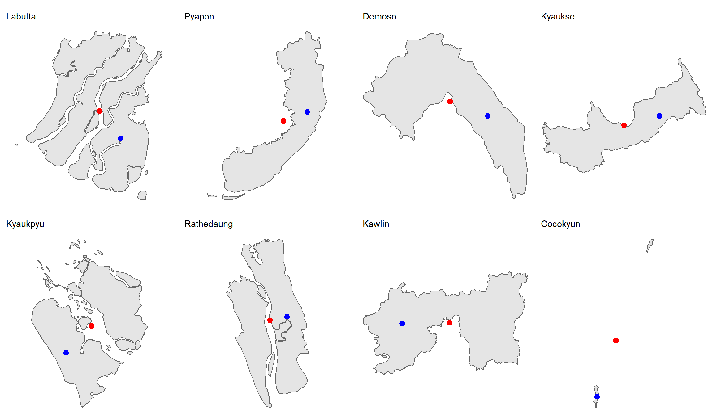
The anchor points of all townships are then plotted for checking.
tm_shape(mmr_ts) +
tm_borders(col = "grey60", lwd = 0.3) +
tm_shape(ts_anchor) +
tm_dots(fill = "blue", size = 0.1) +
tm_title("Anchor points of Myanmar townships",
position = tm_pos_out("center", "top")) +
tm_layout(frame = FALSE)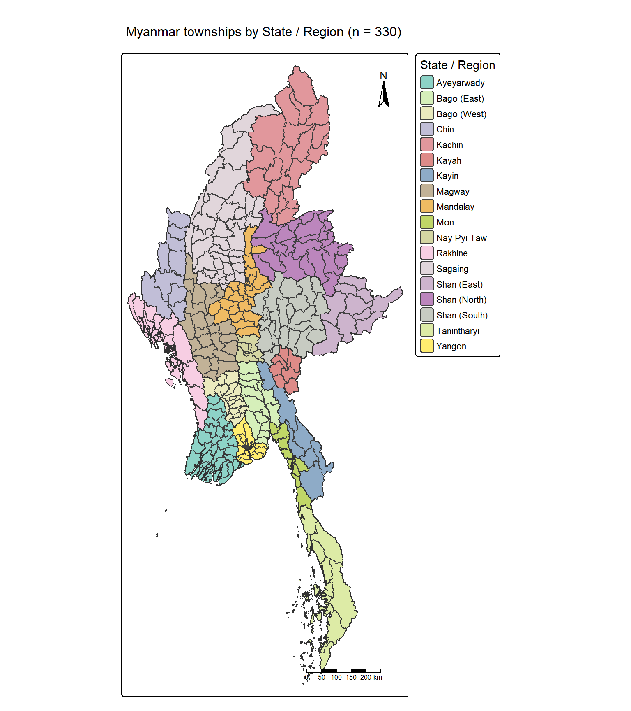
Anchor points appear clustered in certain areas, where townships are much smaller. The densely packed anchor points are taken into consideration when selecting the spatial weights in Section 6.1.
4.2.3 Study Area
After fixing the multi-part townships and centroids, the study area is plotted for a visual check.
NoteNote
The map was first written with older tmap arguments (style = "cat", palette = "brewer.set3"), which tmap 4 converted automatically but with a false “Missing” category in the legend. It was therefore rewritten in native tmap 4 syntax (tm_scale_categorical() and tm_legend()). The 12-colour Brewer Set3 palette was also stretched with colorRampPalette() so that each of the 18 states/regions has a distinct colour.
mmr_st <- mmr_ts %>% group_by(ST) %>% summarise(.groups = "drop")
n_st <- n_distinct(mmr_ts$ST)
st_cols <- colorRampPalette(RColorBrewer::brewer.pal(12, "Set3"))(n_st)
tm_shape(mmr_ts) +
tm_polygons(fill = "ST",
fill.scale = tm_scale_categorical(values = st_cols),
fill.legend = tm_legend(title = "State / Region")) +
tm_shape(mmr_st) +
tm_borders(col = "grey20", lwd = 1) +
tm_title("Myanmar townships by State / Region (n = 330)") +
tm_compass(position = c("right", "top")) +
tm_scalebar(position = c("right", "bottom")) +
tm_layout(legend.outside = TRUE, legend.outside.position = "right")
4.3 ACLED Events
ACLED distinguishes three disorder_types, i.e., Political violence, Demonstrations and Strategic developments. count() is used to compute the number of events of each type, and kable() displays them as a table.
acled_raw %>%
count(disorder_type, event_type, sort = TRUE) %>%
kable(caption = "ACLED events by disorder and event type") %>%
kable_styling(full_width = FALSE)| disorder_type | event_type | n |
|---|---|---|
| Political violence | Explosions/Remote violence | 22925 |
| Political violence | Battles | 21121 |
| Strategic developments | Strategic developments | 17833 |
| Demonstrations | Protests | 14942 |
| Political violence | Violence against civilians | 9958 |
| Political violence; Demonstrations | Protests | 261 |
| Demonstrations | Riots | 45 |
| Political violence | Riots | 24 |
Following the assignment’s focus on armed conflict, events whose event_type is one of the three armed-conflict forms of political violence are retained:
- Battles: armed clashes and changes in territorial control;
- Explosions/Remote violence: air/drone strikes, shelling, IEDs;
- Violence against civilians: attacks, abductions and sexual violence targeting unarmed people.
The following were excluded:
- Riots coded as political violence (24 events) and protests met with excessive force (261 events, coded “Political violence; Demonstrations”). Together they make up about 0.5% of political-violence events and reflect civil unrest rather than armed conflict.
- Strategic developments (17,833 events), such as arrests, looting and base establishment. These are not violent clashes in themselves and are recorded far less consistently.
- Demonstrations (14,987 events), comprising protests and riots not coded as political violence. These measure civil resistance rather than armed conflict.
| Field | Role in this study |
|---|---|
disorder_type |
ACLED’s disorder category; reviewed but not used for filtering |
event_type |
Armed-conflict variable: Battles, Explosions/Remote violence, Violence against civilians |
sub_event_type |
Finer breakdown of event_type (e.g. Armed clash, Air/drone strike), used in the value-added analysis |
admin1 / admin2 / admin3 |
State / district / township, used to reassign events that fall outside the township polygons |
latitude / longitude |
Event location (often village-level), used for plotting and for assigning events to townships |
4.4 Data Quality Check
acled_raw contains two data-quality fields, geo_precision and time_precision, each coded 1 to 3, where 1 is the most precise. The two fields are independent, i.e., an event can have an exact date but only an approximate location. The codes are interpreted with reference to the event descriptions in notes.
geo_precision: 1 = the exact town or village is known; 2 = only an approximate location is known (e.g. “near” a town, or within a township/district), so the event is placed at the nearest named location; 3 = only the state/region is known, so the event is placed at a point representing that state/region.time_precision: 1 = the exact date is known; 2 = only the week is known; 3 = only the month is known.
acled_raw %>% count(time_precision) %>%
mutate(pct = round(100 * n / sum(n), 1))# A tibble: 3 × 3
time_precision n pct
<dbl> <int> <dbl>
1 1 82691 94.9
2 2 4212 4.8
3 3 206 0.2acled_raw %>% count(geo_precision) %>%
mutate(pct = round(100 * n / sum(n), 1))# A tibble: 3 × 3
geo_precision n pct
<dbl> <int> <dbl>
1 1 49261 56.6
2 2 37464 43
3 3 384 0.4Events with geo_precision = 3 (about 0.4%) are dropped. Their coordinates mark a state/region rather than the actual location, so assigning them to whichever township contains that point would create artificial hot spots. Events with code 2 are kept, as they are usually located in or next to the correct township. All time_precision codes are kept, as the time unit used in the analysis is the quarter.
4.5 Data Filtering
Only the three armed-conflict event types in Section 4.3 are retained, and events located only to the state/region (384 records at geo_precision = 3) are excluded. This leaves 53,910 events from the original 87,109. Two columns are also added:
qtr, the quarter in which each event occurred, used to construct the space-time cube; andmodality, which distinguishes air/drone strikes and armed clashes from other forms of violence for the value-added analysis.
conflict_types <- c("Battles", "Explosions/Remote violence", "Violence against civilians")
acled_ac <- acled_raw %>%
filter(event_type %in% conflict_types,
geo_precision < 3) %>%
mutate(
qtr = floor_date(event_date, unit = "quarter"),
modality = case_when(
sub_event_type == "Air/drone strike" ~ "Air/drone strike",
sub_event_type == "Armed clash" ~ "Armed clash",
event_type == "Explosions/Remote violence" ~ "Other remote violence",
event_type == "Violence against civilians" ~ "Violence against civilians",
TRUE ~ "Other"
)
)
c(raw = nrow(acled_raw), kept = nrow(acled_ac)) raw kept
87109 53910 4.6 Convert to sf object
The latitude and longitude values are used to locate events, rather than ACLED’s admin3 text. Township names in admin3 are spelt differently from the MIMU boundaries, e.g., Hpa-An / Hpaan, which would result in events being dropped if matched by name.
acled_sf <- acled_ac %>%
st_as_sf(coords = c("longitude", "latitude"), crs = 4326, remove = FALSE) %>%
st_transform(32647)4.7 Event locations
ACLED records each event at the most precise location available, named in the location field. Where the exact place is known, this may be a village, which sits below the township in Myanmar’s administrative hierarchy. Where only the township is known, the event is placed at the township’s main town. The events are therefore first plotted as points, to show their distribution, before being aggregated to townships.
tm_shape(mmr_ts) +
tm_polygons(fill = "grey97", col = "grey75", lwd = 0.2) +
tm_shape(mmr_st) +
tm_borders(col = "grey40", lwd = 0.6) +
tm_shape(acled_sf) +
tm_dots(fill = "event_type",
fill.scale = tm_scale_categorical(values = c("#1b9e77", "#d95f02", "#7570b3")),
fill.legend = tm_legend(show = FALSE),
fill_alpha = 0.25, size = 0.05) +
tm_facets(by = "event_type", nrow = 1, free.coords = FALSE) +
tm_layout(frame = FALSE, panel.label.bg.color = "white")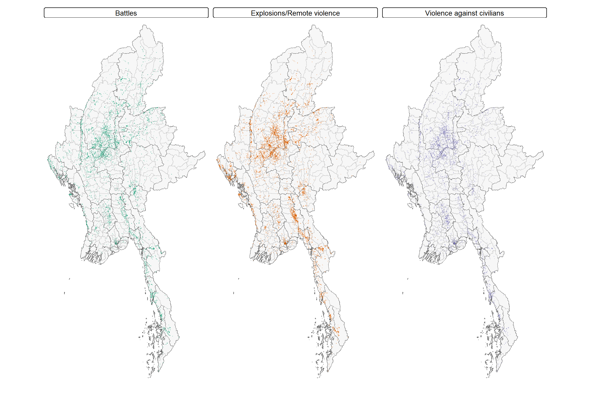
4.8 Point-in-polygon join
Events are assigned to townships using st_join(), which checks which township polygon each point falls inside and attaches that township’s TS_PCODE, TS and ST to the event. left = TRUE keeps events that fall in no township, with empty (NA) township fields, so that they can be counted.
acled_ts <- st_join(acled_sf, mmr_ts %>% select(TS_PCODE, TS, ST),
join = st_intersects, left = TRUE)
unmatched <- acled_ts %>% filter(is.na(TS_PCODE))
nrow(unmatched)[1] 1111 points fall outside the township polygons. ACLED’s admin3 field, which records the township ACLED attributes each event to, is used to assign these points instead:
- Events with an
admin3value that matches a value inTSare reassigned to that township. There are eight such events. - Events with no
admin3value, or a value that does not matchTS, are dropped. There are three such events, all at sea.
distinct() then removes any event that was assigned to two townships because it lies on a shared boundary.
reassigned <- unmatched %>%
select(-TS_PCODE, -TS, -ST) %>%
inner_join(mmr_ts %>% st_drop_geometry() %>% select(TS_PCODE, TS, ST),
by = c("admin3" = "TS"), keep = TRUE)
acled_ts <- bind_rows(acled_ts %>% filter(!is.na(TS_PCODE)), reassigned) %>%
distinct(event_id_cnty, .keep_all = TRUE)
nrow(reassigned)[1] 8nrow(acled_ts)[1] 53907This leaves 53,907 events for the analysis.
4.9 Township-level aggregates
The armed-conflict variables are derived for each township:
| Variable | Definition |
|---|---|
conflict_events |
All armed-conflict events (sum of the three types below) |
battles |
ACLED event type Battles |
remote |
ACLED event type Explosions/Remote violence |
vac |
ACLED event type Violence against civilians |
acled_df <- acled_ts %>% st_drop_geometry()
agg_vars <- function(d) {
d %>% summarise(
conflict_events = n(),
battles = sum(event_type == "Battles"),
remote = sum(event_type == "Explosions/Remote violence"),
vac = sum(event_type == "Violence against civilians"),
.groups = "drop")
}
ts_total <- acled_df %>% group_by(TS_PCODE) %>% agg_vars()
# left-join to ALL 330 townships so that zero-event townships are kept
conflict_ts <- mmr_ts %>%
left_join(ts_total, by = "TS_PCODE") %>%
mutate(across(conflict_events:vac, ~ replace_na(.x, 0)))
summary(st_drop_geometry(conflict_ts)[, c("conflict_events", "battles", "remote", "vac")]) conflict_events battles remote vac
Min. : 0.0 Min. : 0.00 Min. : 0.00 Min. : 0.00
1st Qu.: 24.0 1st Qu.: 4.00 1st Qu.: 9.00 1st Qu.: 7.00
Median : 79.0 Median : 20.00 Median : 29.50 Median : 18.00
Mean : 163.4 Mean : 63.85 Mean : 69.39 Mean : 30.12
3rd Qu.: 214.0 3rd Qu.: 93.50 3rd Qu.: 92.75 3rd Qu.: 40.00
Max. :1039.0 Max. :447.00 Max. :601.00 Max. :213.00 4.10 Space-time cube
4.10.1 Choosing the time bin
The time bin has to suit the process being studied. Armed conflict changes over months rather than days, through offensives, campaigns and shifts in territorial control.
EHSA applies the Mann-Kendall trend test to each township’s series of Gi* values, one per time slice, and at least 8 to 10 measurements are recommended to avoid missing a trend (Kam, 2026). Quarterly bins give 19 slices, which is above this minimum.
4.10.2 Building the space-time cube
ACLED records one row per event, so the events are first counted for each township and quarter using agg_vars(). Townships with no events in a quarter would otherwise have no row for that quarter, so complete() adds every missing township–quarter combination and fills its counts with 0. This gives one row for each of the 330 townships in each of the 19 quarters (6,270 rows).
conflict_panel <- acled_df %>%
group_by(TS_PCODE, qtr) %>% agg_vars() %>%
complete(TS_PCODE = mmr_ts$TS_PCODE, qtr,
fill = list(conflict_events = 0, battles = 0, remote = 0, vac = 0))
c(rows = nrow(conflict_panel), expected = nrow(mmr_ts) * n_distinct(conflict_panel$qtr)) rows expected
6270 6270 The space-time cube is built with spacetime(), linking the quarterly counts to the township boundaries through TS_PCODE (location) and qtr (time). is_spacetime_cube() confirms that the cube is complete, with every township present in every quarter.
conflict_stc <- spacetime(conflict_panel, mmr_ts,
.loc_col = "TS_PCODE", .time_col = "qtr")
is_spacetime_cube(conflict_stc)[1] TRUE5. Exploratory Geovisualisation
5.1 Event distribution across townships
ggplot(st_drop_geometry(conflict_ts), aes(conflict_events)) +
geom_histogram(bins = 40, fill = "#3182bd", colour = "white") +
labs(x = "Events per township", y = "Townships") +
theme_minimal()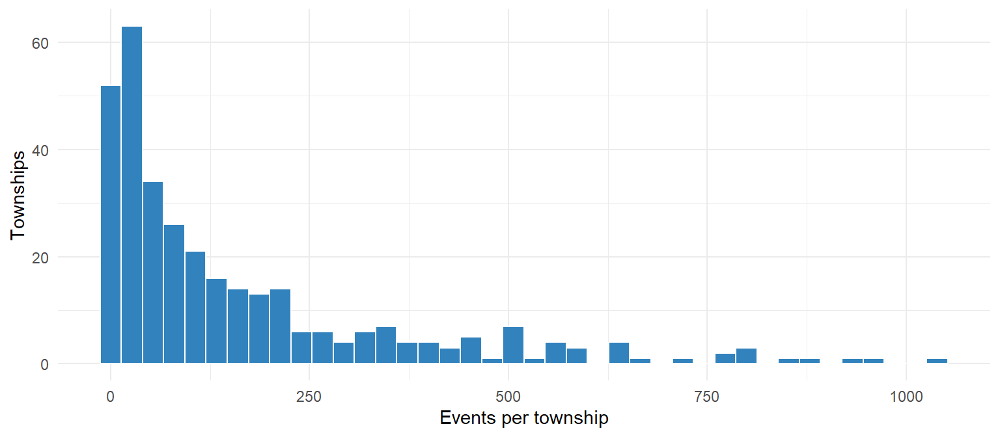
The distribution is strongly right-skewed. A few townships record hundreds of events while others record almost none. This matters for the choice of spatial weights in Section 6.1.
5.2 Choropleth maps
To keep the choropleth maps consistent and avoid repeating code, a helper function, map_choro(), is defined once and reused for each map. The map of all armed-conflict events uses six quantile classes, while the three event-type maps share fixed class breaks so that they can be compared directly.
map_choro <- function(sf_obj, var, title, palette = "brewer.reds", n = 6,
breaks = NULL, labels = NULL) {
scale <- if (is.null(breaks)) {
tm_scale_intervals(style = "quantile", n = n, values = palette)
} else {
tm_scale_intervals(breaks = breaks, labels = labels, values = palette)
}
tm_shape(sf_obj) +
tm_polygons(fill = var,
fill.scale = scale,
fill.legend = tm_legend(title = title, frame = FALSE),
col = "grey70", lwd = 0.2) +
tm_shape(mmr_st) + tm_borders(col = "grey25", lwd = 0.6) +
tm_layout(legend.outside = TRUE, legend.outside.position = "right")
}map_choro(conflict_ts, "conflict_events", "Events") + tm_title("Armed-conflict events")
NoteAnalysis
Armed-conflict events are widespread but highly uneven, ranging from fewer than 15 events in the lightest townships to over 1,000 in the most affected. The heaviest concentration is in the central zone, across Sagaing, Magway and Mandalay, the heartland of numerous independently operating resistance forces (ACLED, 2026). A second belt of high counts runs down the south-east through Tanintharyi, and another is observed in Rakhine, where a contested strategic route lies (ACLED, 2026). The pattern suggests that conflict clusters in contested regions rather than being randomly spread, which is tested with LISA in Section 6.
The three event-type maps share the same fixed class breaks (0, 1–9, 10–24, 25–49, 50–99, 100–199, 200+) and colour palette, so that a colour represents the same number of events on every map. The breaks are narrower at the low end, where most townships lie, to accommodate the skewed counts.
type_breaks <- c(0, 1, 10, 25, 50, 100, 200, Inf)
type_labels <- c("0", "1–9", "10–24", "25–49", "50–99", "100–199", "200+")
tmap_arrange(
map_choro(conflict_ts, "battles", "Events", "brewer.yl_or_rd",
breaks = type_breaks, labels = type_labels) + tm_title("Battles"),
map_choro(conflict_ts, "remote", "Events", "brewer.yl_or_rd",
breaks = type_breaks, labels = type_labels) + tm_title("Explosions / remote violence"),
map_choro(conflict_ts, "vac", "Events", "brewer.yl_or_rd",
breaks = type_breaks, labels = type_labels) + tm_title("Violence against civilians"),
ncol = 3)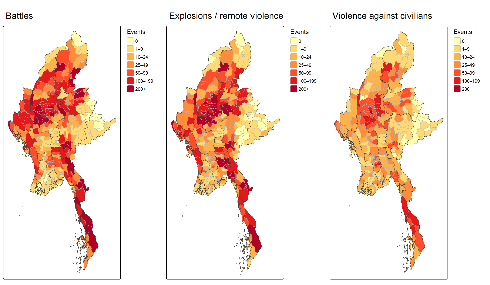
NoteAnalysis
All three event types concentrate in the central zone, where many townships record 100 or more events of each type. Battles are the most widespread, with high counts extending from the centre to the far north, the north-east, the western coast and along the southern strip, reflecting the many active front lines. Explosions and remote violence follow a similar pattern but are less intense in the far north, and are particularly concentrated in the centre and at the southern end, where several townships exceed 200 events. Violence against civilians is noticeably less frequent, with most townships recording 10 to 49 events and higher counts (50 to 199) mainly in the centre and along the southern coastal strip. The eastern highlands and the southern delta record few events of any type. Overall, the areas with the most battles also tend to record the most remote violence and violence against civilians.
conflict_year <- acled_df %>%
mutate(year = year(qtr)) %>%
count(TS_PCODE, year, name = "events") %>%
complete(TS_PCODE = mmr_ts$TS_PCODE, year = 2021:2025, fill = list(events = 0))
mmr_ts %>% left_join(conflict_year, by = "TS_PCODE") %>%
tm_shape() +
tm_polygons(fill = "events",
fill.scale = tm_scale_intervals(breaks = type_breaks, labels = type_labels,
values = "brewer.yl_or_rd"),
fill.legend = tm_legend(title = "Events"),
col = "grey80", lwd = 0.1) +
tm_facets(by = "year", nrow = 1) +
tm_layout(frame = FALSE, panel.label.bg.color = "white")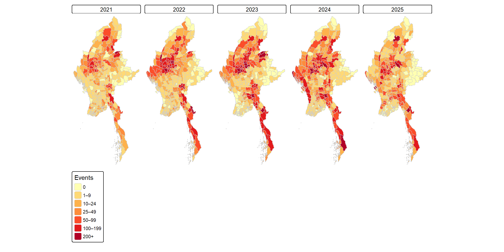
NoteAnalysis
Using the same class breaks for every year shows how the geography of conflict has shifted. In 2021, events were relatively dispersed. From 2022, events intensified and concentrated in the central zone, which remains a core area throughout. In 2023, northern Shan near the Chinese border becomes more prominent, consistent with the launch of Operation 1027 in October 2023. With the collapse of regime forces in northern Shan, other ethnic armed organisations launched synchronised attacks across the country (Michaels, 2023). In 2024, events escalate in Rakhine on the west coast and along the south-east through Kayin and Tanintharyi. In 2025, the map appears lighter overall, although this partly reflects the shorter period covered (January to September only). Overall, the conflict has expanded from the central heartland towards the border states rather than receding, which is examined with EHSA in Section 7.
6. Local Measures of Spatial Association (LMSA)
6.1 Spatial weights
Four approaches to defining neighbours were considered, i.e., polygon contiguity, fixed distance, inverse distance and k-nearest neighbours (KNN). KNN was chosen for the reasons below:
- Township sizes vary widely. Anchor points are dense in Yangon, Mandalay and Nay Pyi Taw, where urban townships are very small (median about 9 km² in Yangon versus about 1,519 km² nationally). Contiguity works best when polygons are of similar size, and a fixed distance band would give urban townships dozens of neighbours and rural townships very few. KNN gives every township exactly k neighbours, regardless of size.
- Every township needs neighbours. Island townships share no boundary with the mainland and would be left without neighbours under contiguity. KNN always finds the k closest townships, so no township is excluded from the analysis.
- The conflict counts are highly skewed (Section 5.1). When values are skewed, each feature should be evaluated in the context of at least eight neighbours, as a rule of thumb (ESRI, n.d.; Kam, 2026). k = 8 is therefore used.
nb_knn <- st_knn(ts_anchor, k = 8)nb_lines <- spdep::nb2lines(nb_knn, coords = st_coordinates(ts_anchor),
proj4string = st_crs(mmr_ts)$wkt) %>%
st_as_sf()
tm_shape(mmr_ts) + tm_borders(col = "grey75", lwd = 0.4) +
tm_shape(nb_lines) + tm_lines(col = "steelblue", lwd = 0.4) +
tm_shape(ts_anchor) + tm_dots(fill = "grey20", size = 0.05) +
tm_layout(frame = FALSE)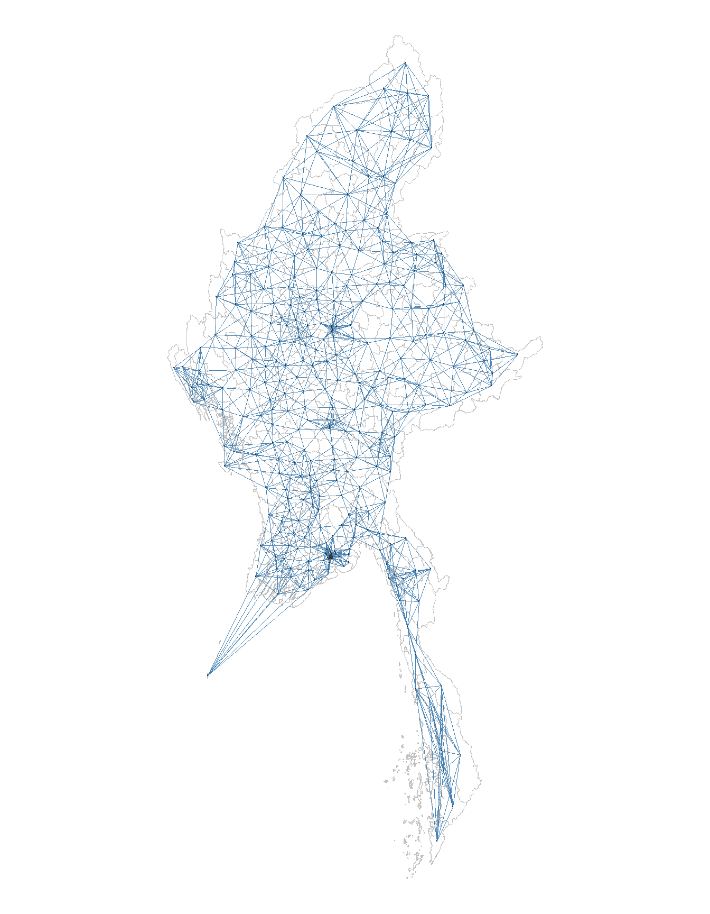
The plot shows each township linked to its eight nearest neighbours, including the island township that does not share a boundary with any other township.
6.2 Weight Schemes
The same k = 8 nearest-neighbour list is used throughout, with row-standardised weights. Local Moran’s I uses it as is, so each township’s spatial lag is the average of its eight neighbours. Gi* in the EHSA requires each township to be part of its own neighbourhood, so include_self() is added.
| Analysis | Neighbours | Weights | Rationale |
|---|---|---|---|
| LISA (local Moran’s I) | k = 8 nearest neighbours | Row-standardised (W) |
Spatial lag = average of the eight neighbours |
| EHSA (Gi* per quarter) | k = 8 nearest neighbours including self | Row-standardised (W) |
Gi* includes the focal township (location i) in its own neighbourhood |
conflict_w <- conflict_ts %>%
mutate(nb = nb_knn,
wt = st_weights(nb, style = "W"),
.before = 1)6.3 Local Indicators of Spatial Association (LISA)
LISA measures, for each township, how similar its value is to those of its neighbours. It identifies clusters, where a township and its neighbours have similar values, and spatial outliers, where a township differs sharply from its neighbours. This is done by computing the local Moran’s I with local_moran().
Based on the local Moran’s I value, clusters and outliers can be identified:
- Cluster: a significant positive local I, where the focal township (location i) has values similar to its neighbours (location j), i.e., high among high (High-High) or low among low (Low-Low).
- Outlier: a significant negative local I, where the focal township differs from its neighbours, i.e., high among low (High-Low) or low among high (Low-High).
In either case, the p-value must be small enough for the cluster or outlier to be considered statistically significant. This report uses α = 0.05, as required by the assignment brief.
6.4 Calculating Local Moran’s I
lisa() is created as a function to calculate local Moran’s I with 99 simulations. It is used for all armed-conflict events and for the three event types, i.e., battles, explosions/remote violence and violence against civilians. Significance is based on the permutation p-value (p_ii_sim) rather than the analytical p-value, which assumes normality and is unsuitable for skewed counts. set.seed() is used so that the simulated results are reproducible.
lisa <- function(d, var, nsim = 99) {
d %>%
mutate(local_moran = local_moran(.data[[var]], nb, wt, nsim = nsim),
.before = 1) %>%
unnest(local_moran)
}Local Moran’s I is first computed for conflict_events, the total number of armed-conflict events per township.
set.seed(267)
lisa_ce <- lisa(conflict_w, "conflict_events")classify_lisa() assigns each township to its quadrant (High-High, Low-Low, Low-High or High-Low) only if its result is statistically significant (p_ii_sim < 0.05). Townships with p_ii_sim ≥ 0.05 are labelled “Not significant”. Quadrants are defined relative to the mean (mean column).
lisa_colours <- c("High-High" = "#d7191c", "Low-Low" = "#2c7bb6",
"Low-High" = "#abd9e9", "High-Low" = "#fdae61",
"Not significant" = "grey92")
classify_lisa <- function(l) {
l %>% mutate(
lisa_class = if_else(p_ii_sim < 0.05, as.character(mean), "Not significant"),
lisa_class = factor(lisa_class, levels = names(lisa_colours)))
}
lisa_ce <- classify_lisa(lisa_ce)A Moran scatterplot is plotted to show how the LISA classes arise. Each point is a township, where the x-axis is its standardised number of armed-conflict events and the y-axis is the spatial lag, i.e., the average standardised value of its eight nearest neighbours. An upward-sloping fitted line indicates positive spatial autocorrelation, i.e., townships tend to have values similar to their neighbours. Townships significant at p < 0.05 are coloured by their LISA class, while the rest are shown in grey.
lisa_ce <- lisa_ce %>%
mutate(z_events = as.vector(scale(conflict_events)),
z_lag_events = st_lag(z_events, nb, wt),
.before = 1)
ggplot(data = lisa_ce,
aes(x = z_events, y = z_lag_events, color = lisa_class)) +
geom_point(size = 2) +
geom_smooth(method = "lm", se = FALSE, color = "black") +
geom_hline(yintercept = 0, lty = 2) +
geom_vline(xintercept = 0, lty = 2) +
scale_color_manual(values = lisa_colours) +
labs(x = "Standardised armed-conflict events",
y = "Spatial lag of standardised events",
color = "LISA (p < 0.05)",
title = "Moran scatterplot: armed-conflict events") +
theme_minimal()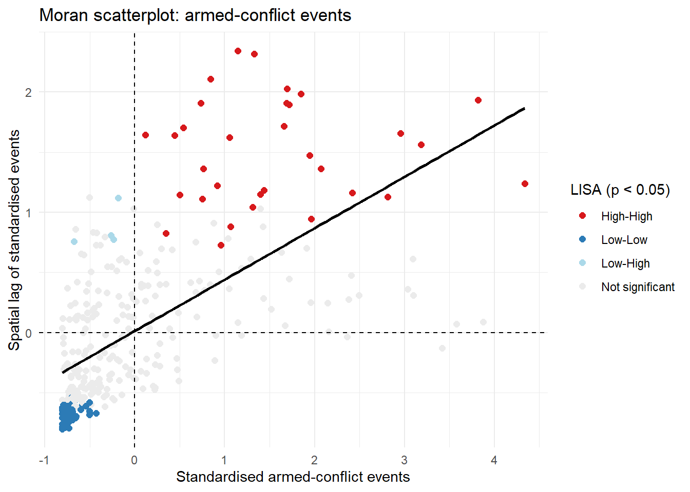
The fitted line slopes upward, confirming that armed conflict is positively spatially autocorrelated, i.e., townships tend to resemble their neighbours.
lisa_ce %>% st_drop_geometry() %>%
summarise(sig_p05 = sum(p_ii_sim < 0.05))# A tibble: 1 × 1
sig_p05
<int>
1 104104 townships have a statistically significant local Moran’s I.
6.5 LISA Map for Armed-Conflict Events
The function map_lisa() draws the significant classes in colour and greys out non-significant townships, so that only significant results are displayed. State/region boundaries are added for reference.
map_lisa <- function(l, title) {
tm_shape(l) +
tm_polygons(fill = "lisa_class",
fill.scale = tm_scale_categorical(values = lisa_colours, levels.drop = FALSE),
fill.legend = tm_legend(title = "LISA (p < 0.05)"),
col = "grey60", lwd = 0.2) +
tm_shape(mmr_st) + tm_borders(col = "grey25", lwd = 0.6) +
tm_title(title) +
tm_layout(legend.outside = TRUE, legend.outside.position = "right")
}map_lisa(lisa_ce, "LISA: All armed-conflict events")
NoteAnalysis
The LISA map reveals a strongly polarised conflict geography. The largest High-High cluster forms a block across the central zone, and a smaller High-High cluster lies in the south-east. These are townships with high event counts surrounded by similarly affected neighbours, indicating sustained, area-wide conflict rather than isolated incidents.
Low-Low clusters cover the far north and townships in the east and south. These are relatively calm townships surrounded by calm neighbours.
Low-High outliers sit on the edges of the conflict zones. They have few events but violent neighbours, making them at risk of spill-over. Only one High-Low outlier appears, confirming that high conflict in Myanmar is rarely isolated. With 108 of 330 townships significant at p < 0.05, the clustering is far beyond what chance alone would produce (about 16 townships).
6.6 LISA by Armed-Conflict Type
The same steps are repeated for each armed-conflict type.
set.seed(267)
lisa_types <- list(
battles = classify_lisa(lisa(conflict_w, "battles")),
remote = classify_lisa(lisa(conflict_w, "remote")),
vac = classify_lisa(lisa(conflict_w, "vac")))The table below summarises the number of townships in each class, for all armed-conflict events and for each type.
list(`All armed-conflict events` = lisa_ce,
Battles = lisa_types$battles,
`Explosions / remote violence` = lisa_types$remote,
`Violence against civilians` = lisa_types$vac) %>%
map_dfr(~ st_drop_geometry(.x) %>% count(lisa_class), .id = "variable") %>%
pivot_wider(names_from = lisa_class, values_from = n, values_fill = 0) %>%
kable(caption = "Number of townships in each LISA class (p < 0.05)")| variable | High-High | Low-Low | Low-High | Not significant | High-Low |
|---|---|---|---|---|---|
| All armed-conflict events | 32 | 68 | 4 | 226 | 0 |
| Battles | 33 | 89 | 12 | 196 | 0 |
| Explosions / remote violence | 29 | 69 | 6 | 226 | 0 |
| Violence against civilians | 42 | 54 | 6 | 226 | 2 |
map_lisa(lisa_types$battles, "LISA: Battles")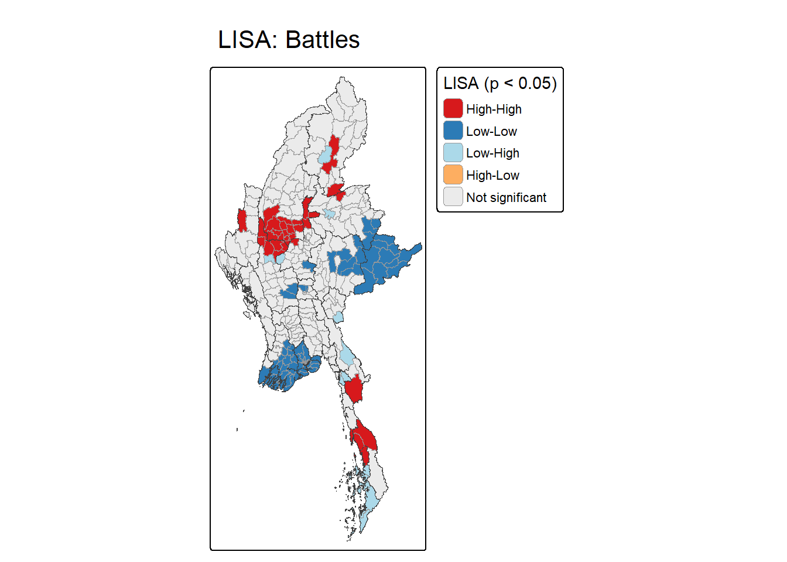
Battles show the most dispersed High-High pattern (35 townships) of the three event types. Besides the large cluster in the centre of the country, significant High-High clusters appear along the south-eastern coastal strip and in the north-east near the borders. Ground fighting therefore spans both the central lowlands and several border regions.
Low-Low clusters (87 townships, the most of any type) dominate the Ayeyarwady delta, with further clusters in the eastern highlands of the Shan Hills. These areas record few armed clashes.
Low-High outliers (9 townships) appear mostly in the south, below the coastal High-High cluster. These townships record relatively few battles despite neighbouring active front lines. No significant High-Low outliers are found.
map_lisa(lisa_types$remote, "LISA: Explosions / remote violence")
Explosions and remote violence, which include air/drone strikes and shelling, cluster most strongly in the centre of the country. A second, smaller High-High cluster lies further south-east, inland of the coastal strip. Unlike battles, there is no significant High-High cluster along the south-eastern coast, suggesting that remote attacks there do not cluster in the way ground fighting does.
Low-Low clusters (70 townships) again cover the Ayeyarwady delta and eastern highlands, as well as the far north.
Low-High outliers (4 townships) sit next to the central High-High cluster. These townships record few strikes despite heavily bombed neighbours and could be exposed if the area under attack widens. No significant High-Low outliers are found. The concentration of remote violence in the centre suggests that air and artillery attacks are focused on a core area rather than spread along all front lines.
map_lisa(lisa_types$vac, "LISA: Violence against civilians")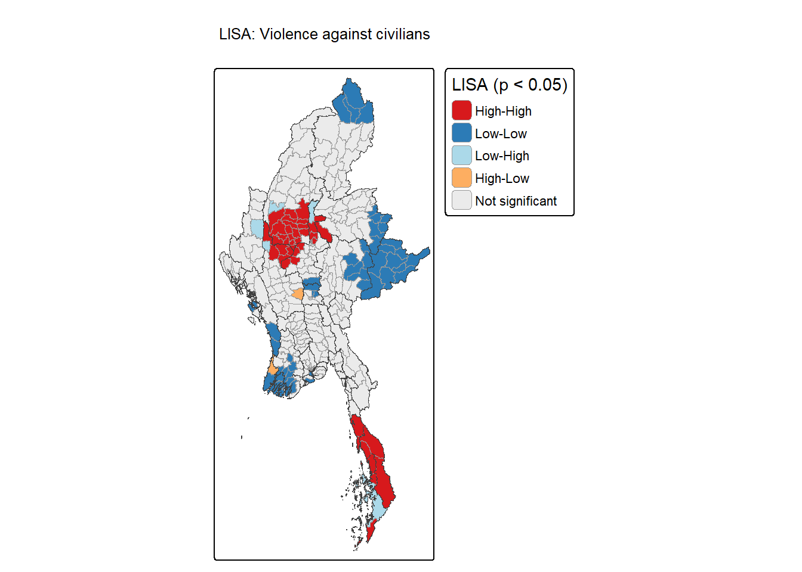
Violence against civilians forms two pronounced High-High clusters (38 townships in total). The first covers the centre of the country, overlapping the core clusters of battles and remote violence. The second extends along much of the south-eastern coastal strip.
Low-Low clusters (53 townships) appear across the southern delta, the eastern highlands and the far north.
Low-High outliers (4 townships) lie on the edges of both High-High clusters. Two High-Low outliers appear beside Low-High townships. These may reflect localised targeting, such as arrests or killings, rather than wider armed conflict.
NoteAnalysis
The centre of the country is a significant High-High cluster for all three event types, marking it as the core of the armed conflict. Elsewhere the event types differ, i.e., battles also cluster in the far north and along border areas, remote violence forms a second cluster in the south-east, and violence against civilians is especially concentrated along the south-eastern coastal strip. Low-Low clusters are consistent across types, covering the southern delta and the eastern highlands.
7. Emerging Hot Spot Analysis
7.1 Setting up the space-time cube with custom weights
The KNN weights, including each township itself, are attached to the cube’s geometry so that EHSA uses them instead of its default (queen contiguity).
conflict_stc_nb <- conflict_stc %>%
activate("geometry") %>%
mutate(nb = include_self(nb_knn),
wt = st_weights(nb, style = "W"),
.before = 1) %>%
set_nbs("nb") %>%
set_wts("wt")7.2 Computing Gi* per quarter
Gi* is computed for each township in each of the 19 quarters using local_gstar_perm(), giving each township a quarterly Gi* series.
set.seed(267)
gi_stars <- conflict_stc_nb %>%
group_by(qtr) %>%
mutate(gi_star = local_gstar_perm(conflict_events, nb, wt, nsim = 99)) %>%
tidyr::unnest(gi_star)7.3 Mann-Kendall Test
The Mann-Kendall test checks for a monotonic trend in each township’s Gi* series. It is non-parametric, but it assumes that the series has no serial correlation, which is checked in Section 7.4.
mk_tbl <- gi_stars %>%
group_by(TS_PCODE) %>%
summarise(mk = list(unclass(Kendall::MannKendall(gi_star)))) %>%
tidyr::unnest_wider(mk) %>%
left_join(st_drop_geometry(mmr_ts), by = "TS_PCODE")
mk_tbl %>% arrange(sl, desc(abs(tau))) %>%
select(ST, TS, tau, sl) %>% head(10) %>%
mutate(sl = format.pval(sl, digits = 3, eps = 0.001)) %>%
kable(digits = 3, caption = "Townships with the strongest Gi* trends") %>%
kable_styling(full_width = FALSE)| ST | TS | tau | sl |
|---|---|---|---|
| Bago (West) | Okpho | 0.743 | <0.001 |
| Bago (West) | Minhla | 0.719 | <0.001 |
| Bago (West) | Zigon | 0.719 | <0.001 |
| Bago (West) | Nattalin | 0.719 | <0.001 |
| Bago (West) | Gyobingauk | 0.719 | <0.001 |
| Bago (West) | Letpadan | 0.696 | <0.001 |
| Magway | Chauk | 0.696 | <0.001 |
| Magway | Salin | 0.696 | <0.001 |
| Mandalay | Natogyi | 0.696 | <0.001 |
| Bago (West) | Paukkhaung | 0.673 | <0.001 |
The table lists the ten townships with the most significant Mann-Kendall trends in their quarterly Gi* values. All ten have positive tau values (0.67 to 0.74), meaning that their Gi* values rose consistently over the 19 quarters (p < 0.001).
Seven of the ten townships are in Bago (West), in the south-central area, with the remainder in Magway and Mandalay at the southern edge of the central zone. These are not the townships with the most conflict, but those where conflict has grown most consistently relative to their surroundings, suggesting that the conflict has been spreading southwards from the central zone into the lowlands. Tau measures how consistent a trend is, not how large it is, so a township can rank highly here while remaining moderately affected.
Gi* is a standardised z-score. The critical value for a two-tailed test at α = 0.05 is calculated with qnorm(), giving ±1.96. Gi* values beyond this range would be significant hot spots (above +1.96) or cold spots (below −1.96) at the 95% confidence level.
alpha <- 0.05
z_crit <- qnorm(1 - alpha / 2)
z_crit[1] 1.959964ex <- bind_rows(mk_tbl %>% filter(sl < 0.05) %>% slice_max(tau, n = 2),
mk_tbl %>% filter(sl < 0.05) %>% slice_min(tau, n = 2))
gi_stars %>%
filter(TS_PCODE %in% ex$TS_PCODE) %>%
left_join(st_drop_geometry(mmr_ts) %>% select(TS_PCODE, TS), by = "TS_PCODE") %>%
ggplot(aes(qtr, gi_star, colour = TS)) +
geom_hline(yintercept = c(-z_crit, z_crit), linetype = "dotted") +
geom_line(linewidth = 0.9) +
labs(x = NULL, y = "Gi*", colour = "Township") + theme_minimal()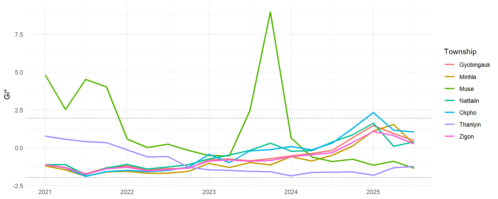
The chart plots the quarterly Gi* values of the townships with the strongest upward and downward trends; four townships are tied at tau = 0.719, so five are shown with upward trends. The dotted lines mark the ±1.96 thresholds.
Upward trends: The five Bago (West) townships move together. They start near or below the cold-spot threshold in 2021 (Gi* about −1.5 to −1.9) and rise steadily to about +1 to +2 by 2025. Only Okpho briefly crosses the hot-spot threshold, in early 2025. These townships have moved from relatively calm to around or above average conflict levels, but are not yet consistent hot spots. This makes them early-warning areas, where conflict could become entrenched if the trend continues.
Downward trends: Muse was a significant hot spot through most of 2021, then declined. It spiked sharply to a Gi* of about 9 in late 2023, coinciding with Operation 1027 in northern Shan State (Michaels, 2023), before falling below zero from 2024. Its downward tau therefore reflects a decline after an intense but short-lived peak, not a steady de-escalation. Thanlyin declines gradually from slightly above zero to near the cold-spot threshold, consistent with its classification as a consecutive cold spot in the EHSA.
7.4 Checking serial correlation: modified Mann-Kendall
The Mann-Kendall test assumes serial independence, which armed-conflict events are unlikely to meet, as conflict in one quarter tends to carry over into the next through retaliation and sustained offensives.
The Ljung-Box test (Ljung & Box, 1978; Hyndman & Athanasopoulos, 2021) checks whether a series is correlated with its own past values. It is applied at lag 1 to each township’s detrended Gi* series, testing whether consecutive quarters are independent. As a robustness check, the modified Mann-Kendall test (Hamed & Rao, 1998), which adjusts the test’s variance for autocorrelation, is also applied.
NoteAI Use Disclosure
AI tools were used to draft the R code that applies the Ljung-Box test (Box.test()) at lag 1 to each township’s detrended Gi* series, and the modified Mann-Kendall test (mmkh() from the modifiedmk package) to each township’s Gi* series, in order to obtain the number of townships with significant serial correlation and significant trends under each test. The output was reviewed and run by the author to verify correctness against the study data.
mk_check <- gi_stars %>%
group_by(TS_PCODE) %>%
arrange(qtr, .by_group = TRUE) %>%
summarise(
mk_p = Kendall::MannKendall(gi_star)$sl[1],
mmk_p = unname(modifiedmk::mmkh(gi_star)["new P-value"]),
lb_p = Box.test(resid(lm(gi_star ~ seq_along(gi_star))),
lag = 1, type = "Ljung-Box")$p.value,
.groups = "drop")
mk_check %>%
summarise(`Significant serial correlation` = sum(lb_p < 0.05),
`Significant trend (standard MK)` = sum(mk_p < 0.05),
`Significant trend (modified MK)` = sum(mmk_p < 0.05, na.rm = TRUE),
`Significant under both` = sum(mk_p < 0.05 & mmk_p < 0.05, na.rm = TRUE)) %>%
pivot_longer(everything(), names_to = "Measure", values_to = "Value") %>%
kable(caption = "Serial correlation and robustness of Mann-Kendall trends (330 townships)")| Measure | Value |
|---|---|
| Significant serial correlation | 153 |
| Significant trend (standard MK) | 137 |
| Significant trend (modified MK) | 130 |
| Significant under both | 123 |
After removing each township’s linear trend, 153 of 330 townships (46%) show significant serial correlation in their Gi* series (Ljung-Box test, p < 0.05). The assumption is therefore violated for a large share of townships, which can lead the standard test to overstate the number of significant trends.
However, of the 137 townships with a significant trend under the standard test, 123 (90%) remain significant under the modified test. The EHSA classifications, which rely on the standard test, are therefore largely robust, and the EHSA maps are based on the standard test.
7.5 EHSA of armed-conflict events
emerging_hotspot_analysis() combines the per-quarter Gi* significance pattern with the standard Mann-Kendall trend to assign each township to one of ESRI’s 17 categories. The settings are:
- threshold = 0.05, to match the significance level of the brief (the sfdep default is 0.01);
- k = 1 time-lag neighbour; and
- nsim = 99 permutations per time slice.
set.seed(267)
ehsa_ce <- emerging_hotspot_analysis(conflict_stc_nb, .var = "conflict_events",
k = 1, nsim = 99, threshold = 0.05,
nb_col = "nb", wt_col = "wt")ehsa_levels <- c("persistent hotspot", "intensifying hotspot", "consecutive hotspot",
"new hotspot", "sporadic hotspot", "oscillating hotspot",
"diminishing hotspot", "historical hotspot",
"persistent coldspot", "intensifying coldspot", "consecutive coldspot",
"new coldspot", "sporadic coldspot", "oscillating coldspot",
"diminishing coldspot", "historical coldspot",
"no pattern detected")
ehsa_colours <- c("#67000d", "#cb181d", "#ef3b2c", "#fc9272", "#fdbb84", "#fee0d2",
"#d4b9da", "#bcbddc",
"#08306b", "#2171b5", "#4292c6", "#9ecae1", "#c6dbef", "#deebf7",
"#a1d99b", "#c7e9c0",
"grey92")
names(ehsa_colours) <- ehsa_levels
prep_ehsa <- function(ehsa, alpha = 0.05) {
mmr_ts %>%
left_join(ehsa, by = c("TS_PCODE" = "location")) %>%
mutate(classification = str_replace(classification, "oscilating", "oscillating")) %>%
mutate(class_sig = if_else(p_value < alpha, classification, "no pattern detected"),
class_sig = factor(class_sig, levels = ehsa_levels))
}
map_ehsa <- function(e, title) {
tm_shape(e) +
tm_polygons(fill = "class_sig",
fill.scale = tm_scale_categorical(values = ehsa_colours, levels.drop = TRUE),
fill.legend = tm_legend(title = "EHSA (p < 0.05)"),
col = "grey60", lwd = 0.2) +
tm_shape(mmr_st) + tm_borders(col = "grey25", lwd = 0.6) +
tm_title(title) +
tm_layout(legend.outside = TRUE, legend.outside.position = "right")
}
ehsa_ce_sf <- prep_ehsa(ehsa_ce)ehsa_ce %>%
mutate(classification = str_replace(classification, "oscilating", "oscillating"),
sig = if_else(p_value < 0.05, "p < 0.05", "p ≥ 0.05")) %>%
count(classification, sig) %>%
ggplot(aes(n, fct_reorder(classification, n, sum), fill = sig)) +
geom_col() + scale_fill_manual(values = c("p < 0.05" = "#cb181d", "p ≥ 0.05" = "grey75")) +
labs(x = "Townships", y = NULL, fill = "Mann-Kendall") + theme_minimal()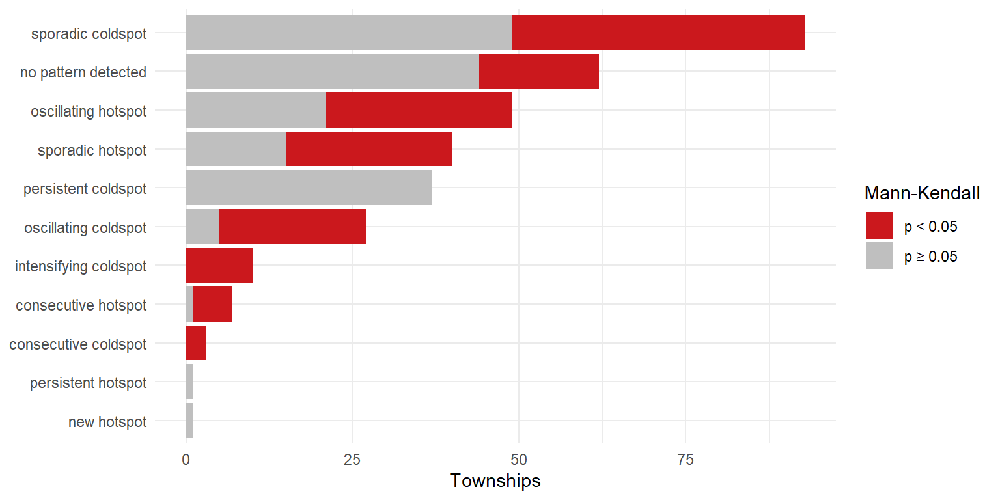
EHSA classifies each township from its quarterly Gi* series (19 quarters) and the Mann-Kendall trend test. Only classes with a significant trend (p < 0.05) are mapped. The classes found in this study are defined below.
| Class | Meaning |
|---|---|
| New hot spot | Significant hot spot in the final quarter only; never a hot spot before |
| Consecutive hot spot | A single uninterrupted run of hot-spot quarters at the end of the period; never a hot spot before that run; fewer than 90% of quarters hot |
| Intensifying hot spot | Hot spot in at least 90% of quarters, including the last, with significantly increasing intensity |
| Sporadic hot spot | On-and-off hot spot (fewer than 90% of quarters); never a cold spot |
| Oscillating hot spot | Hot spot in the final quarter but a cold spot in an earlier quarter; fewer than 90% of quarters hot |
| Intensifying cold spot | Cold spot in at least 90% of quarters, including the last, with significantly increasing intensity |
| Consecutive cold spot | A single uninterrupted run of cold-spot quarters at the end of the period; never a cold spot before that run; fewer than 90% of quarters cold |
| Sporadic cold spot | On-and-off cold spot (fewer than 90% of quarters); never a hot spot |
| Oscillating cold spot | Cold spot in the final quarter but a hot spot in an earlier quarter; fewer than 90% of quarters cold |
Because significance comes from the Mann-Kendall trend test, persistent hot and cold spots, which by definition show no trend, rarely pass the p < 0.05 filter. The absence of a persistent hot spot therefore does not mean that a township is not persistently violent.
map_ehsa(ehsa_ce_sf, "EHSA: All armed-conflict events")
ehsa_ce_sf %>% st_drop_geometry() %>%
filter(class_sig != "no pattern detected") %>%
group_by(class_sig) %>%
summarise(n = n(),
states = paste(names(sort(table(ST), decreasing = TRUE))[1:min(3, n_distinct(ST))], collapse = ", "),
example_townships = paste(head(TS, 6), collapse = ", ")) %>%
kable(caption = "Significant EHSA classes and where they occur") %>%
kable_styling(full_width = FALSE)| class_sig | n | states | example_townships |
|---|---|---|---|
| consecutive hotspot | 6 | Bago (East), Shan (North), Kayin | Hpapun, Shwegyin, Kyaukkyi, Mogoke, Kyaukme, Nawnghkio |
| sporadic hotspot | 25 | Mandalay, Chin, Kachin | Mohnyin, Bhamo, Shwegu, Momauk, Mansi, Hpa-An |
| oscillating hotspot | 28 | Tanintharyi, Mandalay, Bago (East) | Myawaddy, Dawei, Launglon, Thayetchaung, Myeik, Kyunsu |
| intensifying coldspot | 10 | Yangon | Pazundaung, Botahtaung, Kungyangon, Dala, Seikgyikanaungto, Kyauktada |
| consecutive coldspot | 3 | Yangon | Dawbon, Tamwe, Thanlyin |
| sporadic coldspot | 44 | Yangon, Bago (West), Ayeyarwady | Tanai, Nanyun, Thanatpin, Kawa, Yedashe, Pyay |
| oscillating coldspot | 22 | Yangon, Shan (North), Mandalay | Kyaukse, Insein, Mingaladon, Hmawbi, Hlegu, Htantabin |
NoteAnalysis
Consecutive hot spots: Six townships are consecutive hot spots, in two groups, i.e., one in the north-central area east of the central plains and one inland in the south-east. Both became significant hot spots only in the final run of quarters and have stayed hot since, marking areas where sustained conflict is new. The north-central group is consistent with the escalation that followed Operation 1027 in late 2023 (Michaels, 2023).
Sporadic hot spots: 25 townships form blocks in the western uplands and the far north, with smaller pockets in the south-east. This reflects conflict that flares up repeatedly without becoming continuous.
Oscillating hot spots: 28 townships cover almost the entire south-eastern coastal strip and parts of the western coast. These townships were cold spots earlier in the period but are hot spots in the final quarter, showing conflict spreading into areas that were previously calm.
Cold spots: Intensifying (10) and consecutive (3) cold spots are concentrated around the southern delta’s main urban area, where calm has become more entrenched over time. Sporadic cold spots (44) extend across the southern lowlands, and oscillating cold spots (22), formerly hot but now cold, appear mainly in the south and north-east.
Comparison with LISA: The central High-High cluster in LISA appears mostly as “no pattern detected”, as its conflict has been intense throughout without a significant trend. EHSA instead highlights the edges of the conflict, where hot spots are newly forming or spreading.
7.6 EHSA by Armed-Conflict Type
set.seed(267)
ehsa_types <- list(
battles = emerging_hotspot_analysis(conflict_stc_nb, .var = "battles", k = 1, nsim = 99,
threshold = 0.05, nb_col = "nb", wt_col = "wt"),
remote = emerging_hotspot_analysis(conflict_stc_nb, .var = "remote", k = 1, nsim = 99,
threshold = 0.05, nb_col = "nb", wt_col = "wt"),
vac = emerging_hotspot_analysis(conflict_stc_nb, .var = "vac", k = 1, nsim = 99,
threshold = 0.05, nb_col = "nb", wt_col = "wt"))list(`All armed-conflict events` = ehsa_ce,
Battles = ehsa_types$battles,
`Explosions / remote violence` = ehsa_types$remote,
`Violence against civilians` = ehsa_types$vac) %>%
map_dfr(~ prep_ehsa(.x) %>% st_drop_geometry() %>% count(class_sig), .id = "variable") %>%
pivot_wider(names_from = variable, values_from = n, values_fill = 0) %>%
kable(caption = "Number of townships in each EHSA class (p < 0.05)")| class_sig | All armed-conflict events | Battles | Explosions / remote violence | Violence against civilians |
|---|---|---|---|---|
| consecutive hotspot | 6 | 1 | 3 | 0 |
| sporadic hotspot | 25 | 19 | 7 | 22 |
| oscillating hotspot | 28 | 22 | 17 | 13 |
| intensifying coldspot | 10 | 4 | 0 | 0 |
| consecutive coldspot | 3 | 0 | 0 | 10 |
| sporadic coldspot | 44 | 26 | 63 | 61 |
| oscillating coldspot | 22 | 10 | 17 | 9 |
| no pattern detected | 192 | 248 | 220 | 215 |
| intensifying hotspot | 0 | 0 | 2 | 0 |
| new hotspot | 0 | 0 | 1 | 0 |
map_ehsa(prep_ehsa(ehsa_types$battles), "EHSA: Battles")
Hot spots: Battles show only one consecutive hot spot, in the north-central area. Sporadic hot spots (19 townships) form a block in the western uplands and smaller pockets in the north and east-centre, pointing to recurring rather than continuous fighting. Oscillating hot spots (22) appear along the southern part of the south-eastern coastal strip, parts of the western coast and the far north, i.e., areas that were calm earlier but have become active battlegrounds.
Cold spots: Four intensifying cold spots lie around the southern delta’s main urban area, where ground fighting has become ever less likely. Sporadic cold spots (26) cover much of the south-central lowlands, and oscillating cold spots (10) in the north-east have seen battles decline after earlier fighting.
Pattern: Ground fighting is shifting outwards. Its emerging hot spots lie at the periphery, in the western uplands, the far north and the southern coastal strip, rather than in the central plains, where LISA shows fighting is concentrated overall.
map_ehsa(prep_ehsa(ehsa_types$remote), "EHSA: Explosions / remote violence")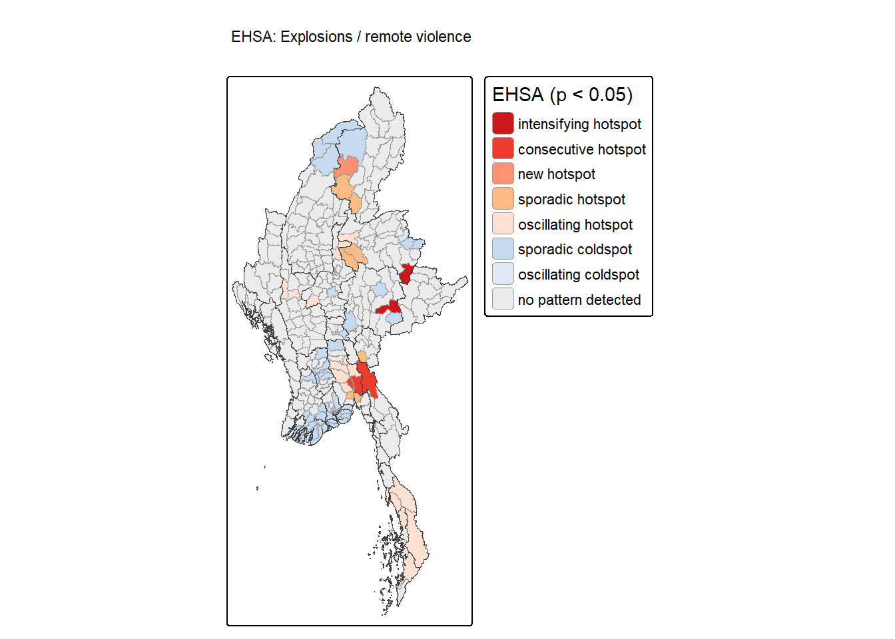
Hot spots: Remote violence is the only event type with intensifying hot spots (2 townships), in the east-centre. These townships have been hot spots in at least 90% of quarters, and the intensity of air strikes and shelling there is still rising significantly. Three consecutive hot spots and one new hot spot lie inland in the south-east, where remote attacks have only recently become sustained. Sporadic hot spots (7) appear in the far north and north-centre, and oscillating hot spots (17) extend along the southern coastal strip.
Cold spots: Sporadic cold spots (63, the most of any class across the four maps) cover the north-west and parts of the southern delta, with oscillating cold spots (17) scattered in the centre and south.
Pattern: Remote violence shows the clearest signs of escalation of the three event types, as it has the only intensifying and new hot spots. These lie in the east and south-east rather than in the central core identified by LISA, suggesting that air and artillery attacks are expanding to new fronts.
map_ehsa(prep_ehsa(ehsa_types$vac), "EHSA: Violence against civilians")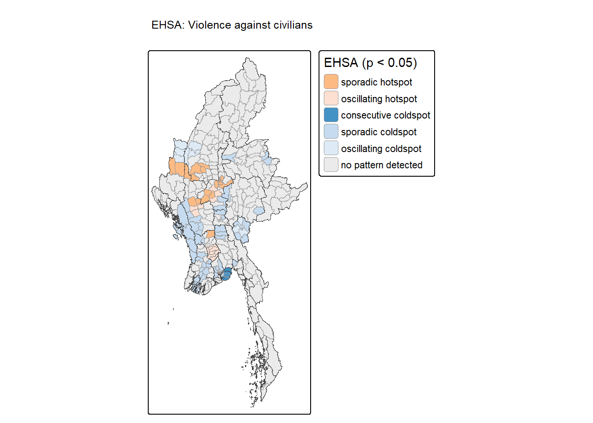
Hot spots: Violence against civilians has no consecutive, intensifying or new hot spots. Its hot spots are only sporadic (22 townships) or oscillating (13), concentrated in the centre-west of the country and in a few south-central townships. Violence against civilians therefore occurs in recurring waves rather than following a steady upward trend.
Cold spots: Ten consecutive cold spots are concentrated around the southern delta’s main urban area, which has seen an uninterrupted run of low violence against civilians in the most recent quarters. Sporadic cold spots (61) run along the western coast and through the central lowlands, and oscillating cold spots (9) are scattered across the centre.
Pattern: The hot spots overlap the central High-High cluster in LISA, confirming the centre as the main area where civilians are targeted. The absence of intensifying or consecutive hot spots suggests that, while violence against civilians remains concentrated there, it has not been escalating steadily in any one place, which is consistent with episodic operations rather than continuous campaigns.
NoteAnalysis
Across all event types, EHSA shows the conflict spreading outwards rather than receding. New, consecutive and oscillating hot spots appear at the periphery, i.e., the north-central area, the south-eastern interior and the south-eastern coastal strip, while cold spots are entrenched around the southern delta. Remote violence shows the strongest escalation, with the only intensifying and new hot spots, while violence against civilians recurs in waves in the central region. No township is a diminishing or historical hot spot, so there is no statistical evidence of de-escalation anywhere in the study period.
8. Value-Added Analysis: Protecting Civilians from Air Strikes
8.1 Why focus on military air strikes?
The chart compares, per quarter, the number of armed clashes with the number of air/drone strikes, split into those by the military and those by other actors. The dashed line marks the launch of Operation 1027 on 27 October 2023, when the Brotherhood Alliance of three ethnic armed organisations launched a coordinated offensive in northern Shan State. Within weeks, it captured more than 100 military positions and several towns on the border with China, and it prompted other resistance groups to launch offensives elsewhere. It was the military’s most serious battlefield challenge in at least three decades (Michaels, 2023).
acled_df %>%
filter(modality %in% c("Air/drone strike", "Armed clash")) %>%
mutate(series = case_when(
modality == "Armed clash" ~ "Armed clashes",
inter1 == "State forces" ~ "Military air/drone strikes",
TRUE ~ "Other actors' air/drone strikes")) %>%
count(qtr, series) %>%
ggplot(aes(qtr, n, colour = series)) +
geom_line(linewidth = 1) + geom_point() +
geom_vline(xintercept = as.Date("2023-10-01"), linetype = "dashed") +
annotate("text", x = as.Date("2023-10-01"), y = 800, hjust = -0.05,
label = "Operation 1027\n(27 Oct 2023)", size = 3) +
scale_colour_manual(values = c("Armed clashes" = "#1b9e77",
"Military air/drone strikes" = "#d95f02",
"Other actors' air/drone strikes" = "#7570b3")) +
scale_x_date(date_breaks = "6 months", date_labels = "%Y-%m") +
labs(x = NULL, y = "Events per quarter", colour = NULL) +
theme_minimal() + theme(legend.position = "bottom")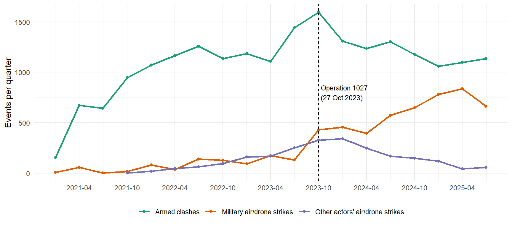
Armed clashes peaked at about 1,600 in the quarter Operation 1027 was launched and have since eased to about 1,100 to 1,300 per quarter. Military air/drone strikes, in contrast, roughly tripled to about 450 in that quarter and kept rising to about 850 by the second quarter of 2025, growing from about one-tenth of the number of armed clashes in 2022 to roughly three-quarters. Other actors’ air/drone strikes have fallen to about 50 per quarter since early 2024. After losing ground, the military appears to have relied increasingly on air power.
The ACLED sub-event Air/drone strike covers attacks by all armed actors. The two tables below check who carries out these strikes and how deadly they are for civilians. This is the only part of the analysis that uses fatalities. ACLED uses the most conservative estimate where reports differ, and acknowledges that this possibly underestimates fatalities (ACLED, 2024), while reporting in Myanmar is further constrained by internet shutdowns, as the country imposed 85 in 2024, the most worldwide (Voice of America, 2025). Fatalities are therefore used only to compare attack types relative to one another.
acled_df %>%
filter(sub_event_type == "Air/drone strike") %>%
group_by(perpetrator = inter1) %>%
summarise(events = n(),
pct_civilian_targeted = round(100 * mean(!is.na(civilian_targeting)), 1),
civilian_targeted_deaths = sum(fatalities[!is.na(civilian_targeting)]),
.groups = "drop") %>%
mutate(share_of_civ_targeted_deaths = round(100 * civilian_targeted_deaths /
sum(civilian_targeted_deaths), 1)) %>%
arrange(desc(events)) %>%
kable(caption = "Air/drone strikes by perpetrator: civilian targeting and civilian-targeted deaths") %>%
kable_styling(full_width = FALSE)| perpetrator | events | pct_civilian_targeted | civilian_targeted_deaths | share_of_civ_targeted_deaths |
|---|---|---|---|---|
| State forces | 5652 | 37.8 | 3505 | 92.8 |
| Political militia | 2067 | 1.9 | 245 | 6.5 |
| Rebel group | 190 | 5.3 | 26 | 0.7 |
| External/Other forces | 2 | 0.0 | 0 | 0.0 |
NoteAI Use Disclosure
AI tools were used to draft the R code that groups civilian-targeted events into military air strikes and all other attacks on civilians, compares their deaths per event and share of mass-casualty events using group_by() and summarise(). The output was reviewed and run by the author to verify correctness against the study data.
civ_attacks <- acled_df %>%
filter(!is.na(civilian_targeting)) %>%
mutate(group = if_else(sub_event_type == "Air/drone strike" & inter1 == "State forces",
"Military air strike", "Other attacks on civilians"))
civ_attacks %>%
group_by(group) %>%
summarise(events = n(),
deaths = sum(fatalities),
deaths_per_event = round(mean(fatalities), 2),
pct_lethal = round(100 * mean(fatalities > 0), 1),
pct_5plus_deaths = round(100 * mean(fatalities >= 5), 1),
.groups = "drop") %>%
kable(caption = "Attacks targeting civilians: military air strikes vs all other attacks") %>%
kable_styling(full_width = FALSE)| group | events | deaths | deaths_per_event | pct_lethal | pct_5plus_deaths |
|---|---|---|---|---|---|
| Military air strike | 2134 | 3505 | 1.64 | 51.2 | 8.2 |
| Other attacks on civilians | 14310 | 12147 | 0.85 | 49.3 | 2.1 |
wilcox.test(fatalities ~ group, data = civ_attacks, alternative = "greater")
Wilcoxon rank sum test with continuity correction
data: fatalities by group
W = 16617925, p-value = 0.0000000000002595
alternative hypothesis: true location shift is greater than 0
NoteAnalysis
The military carried out 5,652 of the 7,911 air/drone strikes recorded (71%), of which 37.8% were coded as targeting civilians, compared with under 6% for strikes by other armed groups. The military accounts for 92.8% of all deaths from civilian-targeted air strikes.
A one-sided Wilcoxon rank-sum test (Mann-Whitney U test) confirms that military air strikes on civilians cause significantly more deaths per event (p < 0.001). Given the scale of military air strikes on civilians and their share of civilian deaths, military air strikes (inter1 == “State forces”) are the focus of this analysis.
8.2 Method: bivariate Local Moran’s I
The LISA in Section 6 shows where a single variable clusters, but it cannot show whether bombing in a township is related to fighting around it. This matters for civilian protection. If air strikes concentrate where there is fighting nearby, proximity to active ground fighting is itself the warning sign for civilians. If instead townships are bombed with little fighting nearby, civilians there have no such warning.
The bivariate Local Moran’s I measures the association between the value of one variable in a township and the spatial lag of a second variable in its neighbours (Anselin, 2020). Here, it relates military air strikes in each township to armed clashes in its eight nearest neighbours, using the same weights as Section 6. Only the period after Operation 1027 (2023-Q4 to 2025-Q3) is used, as this is when aerial warfare shot up. The classes are defined as:
| Class | Meaning | Implication for civilian protection |
|---|---|---|
| High-High | Heavily bombed township next to heavy fighting | Most exposed: air-raid shelters, trauma care, advocacy against strikes on civilians |
| High-Low | Heavily bombed township with little nearby fighting | Bombing without warning, away from the front lines |
| Low-High | Not (yet) heavily bombed, but next to heavy fighting | Front-line watch: early-warning monitoring and preparedness |
| Low-Low | Little bombing and little nearby fighting | Relatively safer: likely receiving areas for displaced people |
NoteAI Use Disclosure
AI tools were used to draft the R code that sums military air strikes and armed clashes per township for the period after Operation 1027, computes the bivariate local Moran’s I using local_moran_bv(). The output was reviewed and run by the author to verify correctness against the study data.
va_post <- acled_df %>%
filter(qtr >= as.Date("2023-10-01")) %>%
group_by(TS_PCODE) %>%
summarise(mil_air_post = sum(sub_event_type == "Air/drone strike" & inter1 == "State forces"),
mil_air_civ = sum(sub_event_type == "Air/drone strike" & inter1 == "State forces" &
!is.na(civilian_targeting)),
clash_post = sum(modality == "Armed clash"),
.groups = "drop")
set.seed(267)
va_bv <- conflict_w %>%
select(nb, wt, ST, TS, TS_PCODE) %>%
left_join(va_post, by = "TS_PCODE") %>%
mutate(across(c(mil_air_post, mil_air_civ, clash_post), ~ replace_na(.x, 0))) %>%
mutate(bv = local_moran_bv(mil_air_post, clash_post, nb, wt, nsim = 99), .before = 1) %>%
unnest(bv)
va_bv <- va_bv %>%
mutate(clash_lag = st_lag(clash_post, nb, wt),
quad = case_when(
mil_air_post > mean(mil_air_post) & clash_lag > mean(clash_lag) ~ "High-High",
mil_air_post <= mean(mil_air_post) & clash_lag <= mean(clash_lag) ~ "Low-Low",
mil_air_post <= mean(mil_air_post) & clash_lag > mean(clash_lag) ~ "Low-High",
TRUE ~ "High-Low"),
lisa_class = factor(if_else(p_sim < 0.05, quad, "Not significant"),
levels = names(lisa_colours)))8.3 Results: Is aerial risk tied to front lines?
map_lisa(va_bv, "Military air strikes vs neighbouring clashes")
The table summarises the number of townships in each class and the military air strikes they received since Operation 1027.
va_bv %>% st_drop_geometry() %>%
group_by(lisa_class, .drop = FALSE) %>%
summarise(townships = n(),
strikes = sum(mil_air_post),
median_strikes = median(mil_air_post),
civilian_targeted = sum(mil_air_civ),
.groups = "drop") %>%
mutate(pct_of_strikes = round(100 * strikes / sum(strikes), 1)) %>%
kable(caption = "Military air strikes by bivariate LISA class (2023-Q4 to 2025-Q3)") %>%
kable_styling(full_width = FALSE)| lisa_class | townships | strikes | median_strikes | civilian_targeted | pct_of_strikes |
|---|---|---|---|---|---|
| High-High | 23 | 920 | 34 | 393 | 19.2 |
| Low-Low | 94 | 4 | 0 | 3 | 0.1 |
| Low-High | 17 | 89 | 4 | 40 | 1.9 |
| High-Low | 0 | 0 | NA | 0 | 0.0 |
| Not significant | 196 | 3770 | 7 | 1427 | 78.8 |
NoteAnalysis
Most exposed: 23 townships are High-High, i.e., heavily bombed townships with heavy fighting in their neighbours, forming clusters in the centre, the north-east and the south-east. Together they received 19.2% of military air strikes since Operation 1027, with a median of 34 strikes per township.
Tied to front lines: No township is High-Low, so there has been no significant cluster of heavy bombing in areas without nearby fighting. Military bombing is concentrated around active front lines rather than in quiet rear areas, which makes proximity to ground fighting the practical warning sign for civilians.
Front-line watch: 17 townships are Low-High, with heavy fighting in neighbouring townships but not yet heavily bombed. They sit beside the High-High clusters in the centre and along the south-eastern strip. As bombing follows the fighting, these are the townships where aerial risk is most likely to spread.
Relatively safer: 94 townships are Low-Low, covering the eastern highlands, the southern delta, the far north and parts of the centre, and they received only 0.1% strikes in total. These are areas that may be considered for housing displaced people and humanitarian aid.
The remaining 78.8% of strikes are in townships without a significant class. The bivariate test identifies where bombing and nearby fighting cluster together, not the volume of bombing, so heavily bombed townships outside these clusters also warrant protection. Over time, the emerging hot spots of remote violence in Section 7.6, which include air strikes, show that the area under aerial attack is still expanding.
9. Integrated Discussion and Implications for Peace-Building
9.1 Key Findings
RQ1: Where does armed conflict cluster? LISA shows that armed conflict is highly concentrated, where conflict-heavy townships cluster together, as do calm townships, with few outliers between them. All three event types form significant High-High clusters in the central zone, marking it as the core of the armed conflict. Battles extend further, to the far north, the border areas and the south-eastern coastal strip, while violence against civilians is especially concentrated in the centre and the south-east. Low-Low clusters in the southern delta and the eastern highlands are consistent across all types, showing areas that have remained relatively insulated from the conflict.
RQ2: Which townships are outliers? Low-High outliers lie on the edges of the High-High clusters, i.e., townships with relatively little conflict next to violent neighbours, which are most at risk of spill-over. High-Low outliers are rare or absent for every event type, so high levels of conflict in Myanmar are almost never isolated.
RQ3: How is conflict evolving? EHSA shows conflict spreading outwards rather than receding. Consecutive and oscillating hot spots appear at the periphery, in the north-central area, the south-eastern interior and the southern coastal strip, where conflict has newly become sustained or has moved into previously calm areas. The central core rarely appears in the EHSA, as its conflict has been intense throughout without a significant trend. Remote violence shows the strongest escalation, with the only intensifying and new hot spots, and no township is a diminishing or historical hot spot.
RQ4: Where are civilians most exposed to air strikes? Military air strikes rose sharply after Operation 1027. When civilians are targeted, they are the most lethal form of attack, and the military accounts for 92.8% of civilian-targeted deaths from the air. Bombing is tied to the front lines: 23 townships are bivariate High-High, receiving 19.2% of strikes since Operation 1027, and none is High-Low.
9.2 Implications for Peace-Building and Humanitarian Response
Sustained presence in the central core. The central High-High cluster has been intense throughout the study period. Humanitarian corridors, protection monitoring and services there need to be planned for the long term rather than as emergency responses.
Protection against air strikes near the front lines. The 23 High-High townships, which received 19.2% of military air strikes since Operation 1027, need air-raid shelters, trauma care and advocacy against strikes on civilians. However, the test picks out townships where bombing and nearby fighting occur together, not simply those bombed the most, so heavily bombed townships outside this group also need protection.
Early warning on the front lines. As bombing follows the fighting, proximity to active ground fighting is the practical warning sign. The 17 Low-High townships in the bivariate results, and the Low-High outliers in Section 6, should be prioritised for monitoring and preparedness.
Planning for displacement. The 94 Low-Low townships, mainly in the southern delta and eastern highlands, received only 0.1% military air strikes since Operation 1027. They are potential receiving areas for displaced people, so services there should be planned for population inflows and humanitarian aid.
Ceasefires would need to start from active conflict. The absence of any fading hot spot means there is no statistical evidence of de-escalation anywhere in the study period. Peace efforts therefore cannot rely on areas where fighting has already calmed down, as there are none yet, and would need to begin where fighting is still ongoing.
10. Limitations
10.1 Data
Reporting bias. ACLED relies on media and partner reports. Events in remote areas, or during internet shutdowns, are more likely to be missed, so some calm areas may partly reflect weaker reporting rather than an absence of conflict.
Under-reported civilian harm. ACLED does not separate civilian from combatant deaths, and civilians killed in strikes aimed at armed groups are not flagged as civilian-targeted, so civilian harm from air strikes is likely under-counted.
Location precision. Events with
geo_precision = 2are placed at the nearest named location, and events known only to the township are placed at its main town. A small share of events may therefore be assigned to a neighbouring township.Counts rather than rates. No reliable township population figures exist after mass displacement since 2021, so larger townships may appear more affected partly because of their size.
Study period. The data end in September 2025, so recent shifts, such as the drop in military air strikes in the final quarter, cannot yet be confirmed as trends.
10.2 Methods
Scale and aggregation. Results depend on the choice of townships and quarters. A different spatial unit (e.g. districts) or time bin (e.g. months) could produce different clusters and trends.
Choice of spatial weights. Results depend on the k = 8 nearest-neighbour definition. Remote townships, such as the island townships, are linked to distant neighbours, so their results should be read with caution.
Significance and multiple testing. With 99 permutations, the smallest attainable p-value is 2 × 1/(99 + 1) = 0.02, so significance near the 0.05 threshold is coarse. Mapping at p < 0.05 across 330 townships without correction also overstates the number of significant townships. Serial correlation was checked in Section 7.4, where 90% of significant trends remained significant after correction.
What EHSA can and cannot show. EHSA maps are filtered on the Mann-Kendall trend p-value, so persistent hot and cold spots, which by definition have no trend, rarely appear. The absence of a hot-spot class therefore does not mean that a township is calm.
Bivariate LISA does not control for in-township correlation. A High-High classification may partly reflect fighting and bombing within the same township rather than in its neighbours alone (Anselin, 2020).
11. References
ACLED. (2024). Fatalities [Methodology, last updated 7 May 2024]. Armed Conflict Location & Event Data Project. https://acleddata.com/methodology/fatalities
ACLED. (2026, July 27). Myanmar outlook: Fighting is set to intensify in the center of the country. Armed Conflict Location & Event Data Project. https://acleddata.com/report/myanmar-outlook-fighting-set-intensify-center-country
Anselin, L. (2020). Local spatial autocorrelation (3): Multivariate local spatial autocorrelation [GeoDa workbook]. https://geodacenter.github.io/workbook/6c_local_multi/lab6c.html
ESRI. (n.d.). Modeling spatial relationships. ArcGIS Pro documentation. https://pro.arcgis.com/en/pro-app/3.4/tool-reference/spatial-statistics/modeling-spatial-relationships.htm
Hamed, K. H., & Rao, A. R. (1998). A modified Mann-Kendall trend test for autocorrelated data. Journal of Hydrology, 204(1–4), 182–196. https://doi.org/10.1016/S0022-1694(97)00125-X
Hyndman, R. J., & Athanasopoulos, G. (2021). Forecasting: Principles and practice (3rd ed.). OTexts. https://otexts.com/fpp3/diagnostics.html
Kam, T. S. (2026). ISSS626 Geospatial Analytics and Applications: Lesson 5, Global and local measures of spatial association [Lecture slides]. Singapore Management University.
Kam, T. S., & Zhi, V. (2018). Is there space for violence?: A data-driven approach to the exploration of spatial-temporal dimensions of conflict. In Proceedings of the 2nd ACM SIGSPATIAL Workshop on Geospatial Humanities (pp. 1–10). ACM.
Ljung, G. M., & Box, G. E. P. (1978). On a measure of lack of fit in time series models. Biometrika, 65(2), 297–303. https://doi.org/10.1093/biomet/65.2.297
Lovelace, R., Nowosad, J., & Muenchow, J. (2026). Geocomputation with R. https://r.geocompx.org/geometry-operations.html
Michaels, M. (2023, November). Operation 1027 reshapes Myanmar’s post-coup war. International Institute for Strategic Studies. https://myanmar.iiss.org/analysis/2023-11
Patakamuri, S. K., & O’Brien, N. (2021). modifiedmk: Modified versions of Mann Kendall and Spearman’s Rho trend tests [R package]. https://CRAN.R-project.org/package=modifiedmk
Pebesma, E., & Bivand, R. (2023). Spatial data science: With applications in R (ch. 14, Proximity and areal data). https://r-spatial.org/book/14-Areal.html
Voice of America. (2025, February 24). Report: In record year of internet shutdowns, Myanmar leads. https://www.voanews.com/a/report-in-record-year-of-internet-shutdowns-myanmar-leads/7985585.html